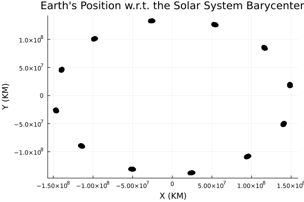

Quick Start
Navigating ephemeris platforms — and processing ephemeris data — can sometimes have a steep learning curve. This page will help you get up and running with loading and plotting ephemeris. For more detailed information, check out the documentation examples, or documentation pages for each individual package in the drop-down menu.
The SPICEBodies.KernelBody type allows us to idiomatically query information from the SPICE kernel pool. First, download some common generic kernels (such as de432s below) and load them into the kernel pool with SPICE.furnsh. If you want more information about what's in each kernel, inspect each kernel's docstring; for example, @doc de432s, or help?> de432s in Julia's REPL.
julia> using SPICE, SPICEKernels, SPICEBodiesjulia> return furnsh( de432s(), # position and velocity data for nearby planets latest_leapseconds_lsk(), # timekeeping, parsing epochs gm_de440(), # mass parameters for major solar system bodies pck00011(), # physical properties of major solar system bodies )julia> earth = KernelBody("earth")SPICEBodies.KernelBody(399)
We can now call the earth variable like a function of time, and get back the positions (and velocities) interpolated by CSPICE from the data in the kernel pool.
julia> using Datesjulia> timepoints = [DateTime(year, month, 1) for year in 1950:2049, month in 1:12]100×12 Matrix{Dates.DateTime}: 1950-01-01T00:00:00 … 1950-12-01T00:00:00 1951-01-01T00:00:00 1951-12-01T00:00:00 1952-01-01T00:00:00 1952-12-01T00:00:00 1953-01-01T00:00:00 1953-12-01T00:00:00 1954-01-01T00:00:00 1954-12-01T00:00:00 1955-01-01T00:00:00 … 1955-12-01T00:00:00 1956-01-01T00:00:00 1956-12-01T00:00:00 1957-01-01T00:00:00 1957-12-01T00:00:00 1958-01-01T00:00:00 1958-12-01T00:00:00 1959-01-01T00:00:00 1959-12-01T00:00:00 ⋮ ⋱ 2041-01-01T00:00:00 2041-12-01T00:00:00 2042-01-01T00:00:00 2042-12-01T00:00:00 2043-01-01T00:00:00 2043-12-01T00:00:00 2044-01-01T00:00:00 2044-12-01T00:00:00 2045-01-01T00:00:00 … 2045-12-01T00:00:00 2046-01-01T00:00:00 2046-12-01T00:00:00 2047-01-01T00:00:00 2047-12-01T00:00:00 2048-01-01T00:00:00 2048-12-01T00:00:00 2049-01-01T00:00:00 2049-12-01T00:00:00julia> states = earth.(timepoints)100×12 Matrix{Vector{Float64}}: [-2.72032e7, 1.32941e8, 5.76417e7, -29.7536, -5.18934, -2.25148] … [5.30429e7, 1.26401e8, 5.48094e7, -28.2747, 9.73084, 4.22091] [-2.67048e7, 1.3283e8, 5.75974e7, -29.7855, -5.05441, -2.1911] [5.36618e7, 1.25906e8, 5.45944e7, -28.2409, 9.83701, 4.26518] [-2.60404e7, 1.32656e8, 5.75208e7, -29.8083, -4.9525, -2.14941] [5.20426e7, 1.26287e8, 5.4754e7, -28.352, 9.50079, 4.12013] [-2.77336e7, 1.321e8, 5.7274e7, -29.7125, -5.29099, -2.29401] [5.3e7, 1.26001e8, 5.46223e7, -28.3142, 9.63732, 4.17923] [-2.67436e7, 1.32158e8, 5.72907e7, -29.7564, -5.15987, -2.23891] [5.39721e7, 1.25889e8, 5.45638e7, -28.2737, 9.74086, 4.22277] [-2.57422e7, 1.32382e8, 5.73777e7, -29.7731, -5.05039, -2.19091] … [5.48629e7, 1.25925e8, 5.45723e7, -28.2068, 9.86713, 4.27994] [-2.48235e7, 1.32762e8, 5.75364e7, -29.7933, -4.90329, -2.12624] [5.31378e7, 1.26918e8, 5.49992e7, -28.3765, 9.54155, 4.13635] [-2.66662e7, 1.32808e8, 5.75521e7, -29.7471, -5.26755, -2.28558] [5.36669e7, 1.2708e8, 5.50699e7, -28.3255, 9.63867, 4.1807] [-2.61172e7, 1.33292e8, 5.77638e7, -29.7583, -5.15253, -2.23347] [5.40284e7, 1.27173e8, 5.51172e7, -28.2716, 9.7677, 4.23569] [-2.5736e7, 1.33709e8, 5.79512e7, -29.7953, -5.01378, -2.17535] [5.4244e7, 1.27132e8, 5.51085e7, -28.2502, 9.87454, 4.28202] ⋮ ⋱ [-2.54574e7, 1.32911e8, 5.75776e7, -29.8036, -5.0057, -2.1682] [5.46936e7, 1.2648e8, 5.47915e7, -28.2282, 9.87897, 4.28164] [-2.50245e7, 1.33373e8, 5.77804e7, -29.8133, -4.89813, -2.12377] [5.49738e7, 1.26487e8, 5.48009e7, -28.1675, 10.0049, 4.33719] [-2.47191e7, 1.33699e8, 5.79288e7, -29.8447, -4.76185, -2.06238] [5.51785e7, 1.26324e8, 5.47418e7, -28.1395, 10.1154, 4.38545] [-2.44849e7, 1.33848e8, 5.80048e7, -29.884, -4.65722, -2.01845] [5.29585e7, 1.26824e8, 5.4969e7, -28.2656, 9.75933, 4.22974] [-2.67938e7, 1.33381e8, 5.78121e7, -29.7883, -5.02027, -2.1752] … [5.33369e7, 1.26316e8, 5.47576e7, -28.2077, 9.89224, 4.28926] [-2.63641e7, 1.33198e8, 5.77424e7, -29.8228, -4.88509, -2.11643] [5.3905e7, 1.25746e8, 5.45145e7, -28.1688, 9.99476, 4.33115] [-2.57436e7, 1.32951e8, 5.76379e7, -29.8398, -4.78149, -2.07302] [5.46765e7, 1.25207e8, 5.42796e7, -28.093, 10.1085, 4.38232] [-2.49157e7, 1.32748e8, 5.7549e7, -29.8403, -4.6454, -2.01197] [5.31726e7, 1.25687e8, 5.4484e7, -28.2457, 9.79883, 4.24668] [-2.65244e7, 1.323e8, 5.735e7, -29.7935, -4.98987, -2.16382] [5.41075e7, 1.25496e8, 5.4394e7, -28.2018, 9.89709, 4.2896]
Finally, let's plot the data we just collected. This is why we need leap days!
julia> using Plotsjulia> figure = let x = [u[begin] for u in states], y = [u[begin+1] for u in states] scatter( x, y; label=nothing, color=:black, xlabel="X (KM)", ylabel="Y (KM)", title="Earth's Position w.r.t. the Solar System Barycenter" ) end;